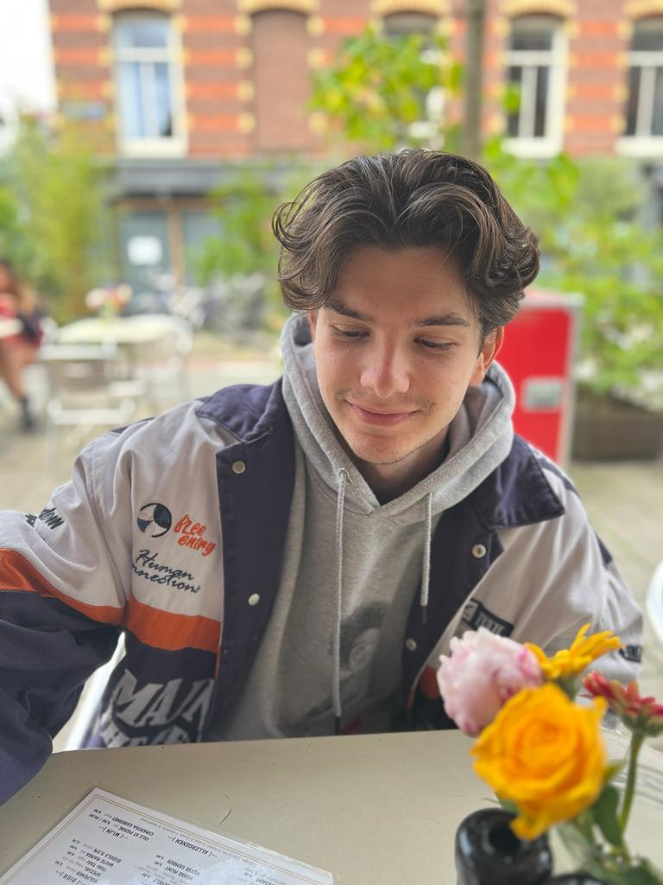
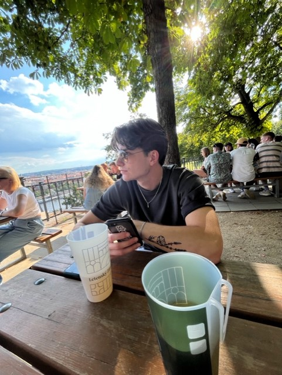

ik ben Lucas, eerste jaar student Communication and multimedia design aan de Hva. Ik hou ervan om op een terrasje te zitten met vrienden en familie. Afgelopen zomer heb ik bij De Waterkant gewerkt, dit heeft mij nog een beter kijkje gegeven in het terrassen en daarom vind ik dat ik mezelf een professionele terras ganger mag noemen. Het liefst bestel ik een vaasje met een portie bitterballen met mosterd en zit ik lekker lang in het zonnetje (als die schijnt natuurlijk).

